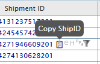
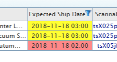
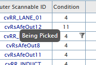
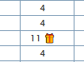
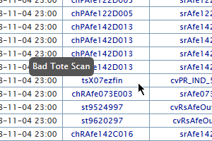

Rodeo Plus started out as a plug-in called 'Bypass Hitch' as it had just one simple task, avoid going to Hitch Tool which at that time had been depricated though links to the tool still survived. The task of this plug-in at the time was to take links that would send you to Hitch Tool and reroute them to OOPS Tool (for ShipIDs) or to FCResearch (for ASINs and locations). Since it's inception, OOPS Tool has also been depricated in favor of the POPS Tool. Now ShipIDs will open a new rodeo tab that show the items needed for that shipment.
Functions:
ShipIDs: Links open a new window to rodeo showing all items for that shipmnet.
ASINs, locations, sp00s: These links will open as a search in FCResearch.
Copy Clipboard: Next to shipIDs will be an invisible clipboard that shows up when hovered. Pressing it will copy the shipID and trim the white space (an issue that was presented when pasting IDs in chat or pslipUI.)

CPT highlighter: Highlight the cell of the expected ship date when the shipment is a CPT. red for shipments due out within 1.5hrs from expected ship date (roughly 1 hour from PAD time) and yellow for shipments due out in the next 2.5hrs.

Condition Tooltip: Hovering over a cell in the 'condition' column will show a tooltip with a short description.

Gift Wrap Icon: Cells with any condition pertaining to gift wrap shipments will have a little gift icon next to the condition.

Tote Checker: Sometimes when totes are scanned, they don't scan all the characters in the barcode or they capitalize letters that shouldn't be capitalized. When this happens, the physical tote may get lost if the sorter scans the tote correctly when a picker didn't. This add-on will have a tooltip on-hover as well as highlight these 'bad scan' totes with a red blinking animation so that they can be recognized and dealt with sooner rather than later.

Rodeo Plus will continue to have new functionality added to it. A few things currently in the works:
Pop-up FCResearch: Instead of opening a new tab to see the item when clicking on the ASIN, there will be a pop-up of some sort to show the item image and maybe some other key information.
ASIN title on hover: Currently there is a rodeo option to have a column to display the title of the ASIN. This takes up width on screen and truncates the title to the width of the cell. I'd like to have the ASIN title show up under the cursor when you hover ofver the ASIN.
* 1.0.x *
* Shipment ID ==> OOPS now only effects the shipID numbers on the page and not the link to the amazon item page
* Scannable ID ==> scannable IDs such as sp00s and totes link directly to FCResearch (mod locations like P-2-A151B542 are currently broken)
* Mod locations now also link to FCResearch
* Adding padding to the inner left side of table cells to make for easier double-click selecting.
* Shipment ID no longer links to OOPS (OOPS depricated)
* Shipment ID opens a new page for that Shipment ID in Rodeo
* Code should work in any FC now.
* Links for euler, hero, aps, and filter are now always visible and spaced cleaner.
* Mod locations ==> Links to locations with underscores(ie. ppSLAM_403) will now properly link to the correct page.
* Whitespace no longer gets copied when selecting shipID (by double-click)
* Determining the FC is far more reliable now.
* 1.1.x *
* Bypass Hitch now does more! and will be referred to as Rodeo Plus.
* Added a copy button that copies the shipID and trims the whitespace. Notifies user with a yellow blinking cell
* Yellow highlight for copy button now blinks on the entire cell rather than just around the numbers
* 1.2.x *
* CPT Highlighter added.
* Version control: Version can be seen by hovering over the Rodeo Plus logo
* Slight tweak to CPT highlighter: highlight red for shipments due out in 1.5 hrs or less or yellow for 2.5 hours or less
* Adding the clipboard to the cells now relies on the title of the column rather than the hope that the shipment column is the second column in the table
* Tool tip added to copy shipment ID clipboard
* Conditions tooltip added
* Giftwrap icon added
* 1.3.x *
* Bad Tote Scan Highlighter - highlights totes that weren't scanned properly
* Includes 'Bad Tote Scan' tooltip
* New Rodeo+ logo
* Update to regex for mods to include some odd locations like P-2-A106A95 where there are only 2 trailing digits
* Added mezz Giftwrap to the list of acceptable scans for the bad scan highlighter
* Added copy button to "Scannable ID" column cells
* Fixed a bug that occurred when scannable ID copy buttons were added where blank cells would flash red as if they were bad tote scans.
* Turned off tool tips for copy buttons until all quick link buttons have been establshed
* Copy button clipboards have been push to the right side of the cells to line everything up
* Removed flex box from conditions column to keep numbers centered
* Added AFE's PS totes to the list of scannable IDs for the bad tote scan addon.
* Added an update button between the search bar and the help button in the header for easier access to updates.
* Variables used in defining columns now have `if` statements so that they don't run if they are undefined. This helps the script to run on the trans-shipment page where there are no columns like "condition"
* Clipboards for copying the scannable ID now show on the transshipments page.
* 1.4.x *
* Save the HREFs from euler, hero, aps, and filter buttons
* Removed current euler, hero, aps, and filter buttons(quick links)
* Added in newer quicklinks
* Removed padding-right from the shipment cells that was used for the old quick links
* Added links from old buttons to the new ones
* FN SKU column now has a copy button
* Added case stickers as accepted locations for the bad scan checker ex: csXP25cXxz5
* Stop most of the script from running if loading over 300 items (Clipboards, CPTs, & updated links still function)
-Includes a notification at the top of the page stating that scripts have been disabled because of too many items
-Notification also has the option to restart other functions after page loads
-'Scripts Re-enabled!' notification replaces original notification when enabling scripts
* Main banner and table header are now sticky and will stick to the top of the page when scrolling down a long page
* Removed CSS page in favor of styles built into the user.js file. This will stop things from breaking when updated CSS and the user not yet updating to the latest script.
* Switched the clipboard text symbol for a copy icon .png (the clipboard was being copied when manually selecting text.)
* Now when there are more than one of the same item for a shipment, the cell in the "Quantity" column will highlight.
* 1.5.x *
* ASINs now have a print button to the right of the copy button to print labels straight from Rodeo
* tspsAFESLAM totes now get a purple border like other problem solve totes